白馬五竜スキー場・白馬八方尾根スキー場
| 日付 | 2021年2月10日（水） - 2021年2月13日（土） |
|---|---|
| メンバー | 家族（妻、長女・9歳、長男・7歳） |
| アクセス | 車 |
会社で1週間の休暇が取れたため、休暇前半は家族でスキーに行く。
緊急事態宣言が明けた直後に行く予定を立てたが、宣言は延長されてしまった。
しかし、今更旅行のキャンセルはできないので予定通り決行。目的地は白馬だ。
例年なら混雑しているイメージのスキー場だが、
今なら外国人も少ないし、平日であればストレスなく滑れそうだ。
1日目
白馬五竜のスキー場に到着。もう昼前だが、駐車場は半分程度しか埋まっていない。
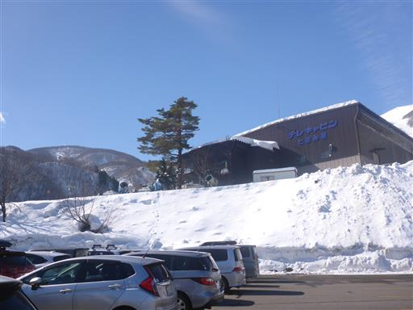
スキーのレンタルを行い、早速ゲレンデへ。
本日は見事な快晴だ。
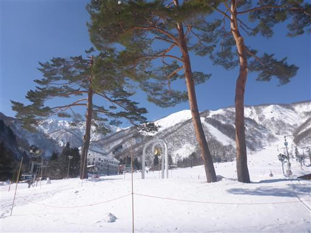
連休に備えてか、ベイマックスの雪像が造られている。
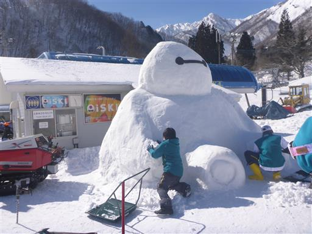
まずは初級者コースのリフトに乗って足慣らし。
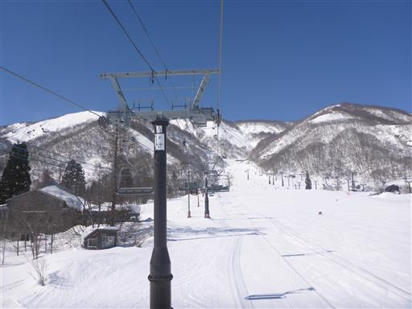
なだらかな広い斜面を滑り降りる。
1年振りのため息子はこけまくっている。
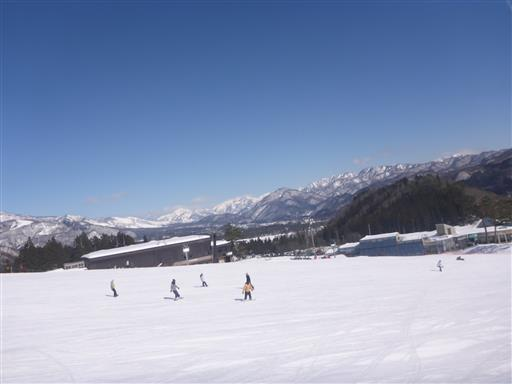
足慣らししたら、ゴンドラに乗ってアルプス平駅へ。
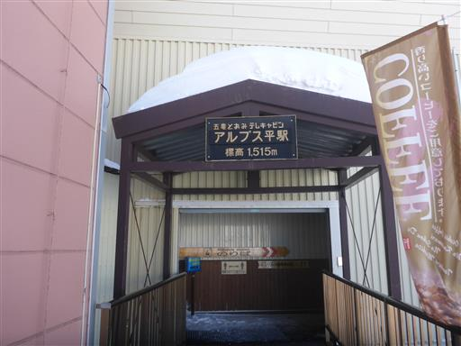
滑走より前に、まずは展望台に登る。

階段を登ると大展望台に到着。
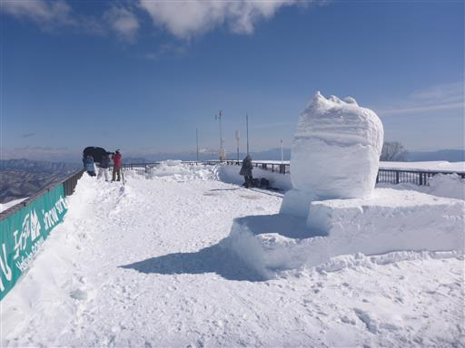
目の前に聳える五竜岳は圧倒的存在感。
このスキー場は五竜岳から延びる遠見尾根の末端にある。
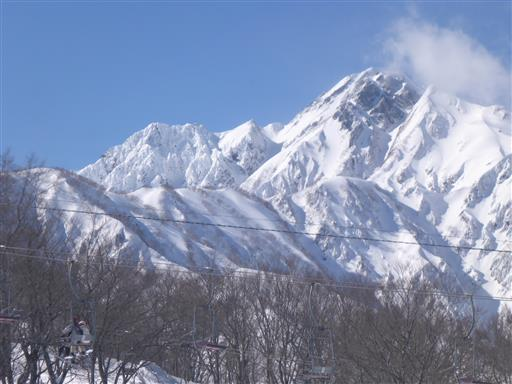
反対側には高妻山など北信の山々。
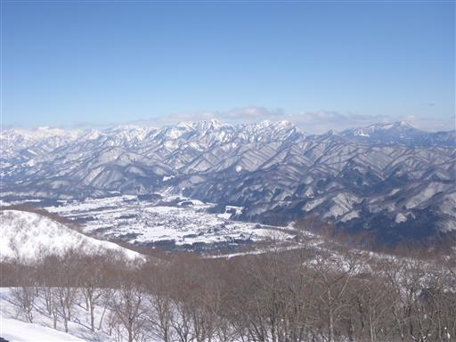
何のキャラクターか分からないが、雪像の前で記念撮影。
北アルプスは少し雲がかかっていて、残念ながら白馬岳は隠れている。
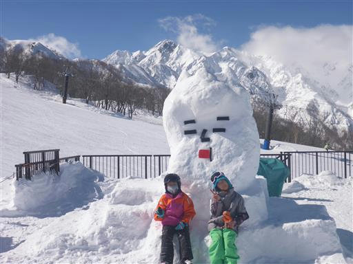
滑走開始。目の前の真白な尾根が八方尾根だ。
素晴らしい展望のスキー場だ。
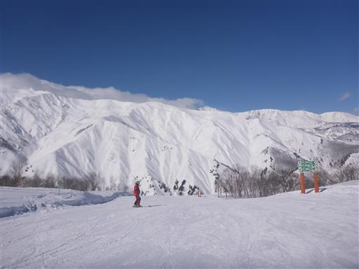
林間コースからは迫力ある雪山の景色を眺めながら滑走できる。
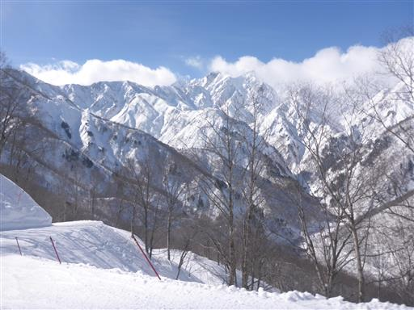
標高の高いところにあるリフトに乗って何本か滑る。雪の壁が高い。
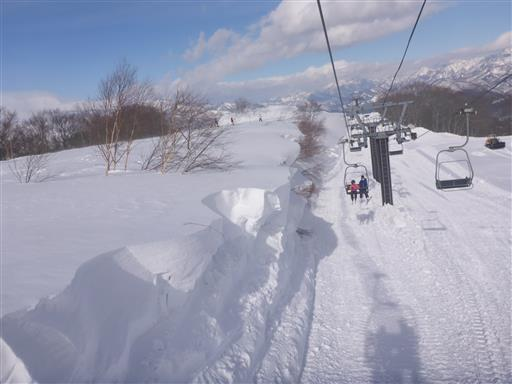
広い斜面。1日目は非常に空いていて滑りやすかった。
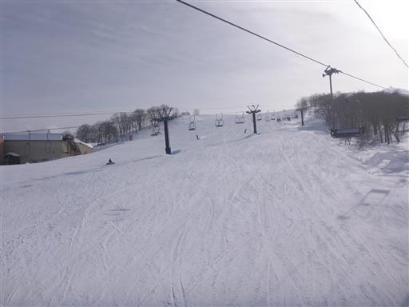
今回はペンション森の風に宿泊。
緊急事態宣言中の平日なので他に誰もいないかと思ったら、思いの外賑わっている。
人気の宿はコロナ関係なく客が入るようだ。
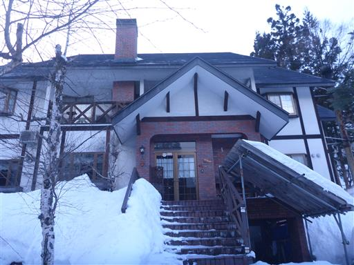